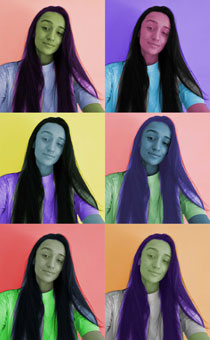

Kreiranje fonta
Bezierova krivulja je parametarska krivulja definirana sa 4 točke i predstavlja temelj današnje vektorske grafike. Kreirala sam proizvoljan broj krivulja čije su točke poravnate prema mreži koordinatnog sustava, definirala sam im boju i debljinu obruba.
Multipliciranje objekata nacrtanim sa alatom Pen. Objekte sm crtala ili kao konture odabrane slike po izboru. Tehnikama kopiranja tipkom Alt (Duplicate) više sam puta kopirala oblike, aplicirala sam drugačijim bojama kreiranim u novoj Color grupi Swatch.
Izrađivala sam složene objekte koji se sastoje od više staza metodama spajanja (Unite/Compound path) ili oduzimanja oblik (Difference/Subtract). Aplicirala različite vrste gradijenata od dvije ili više boja.
Retuširala sam zadane slike.
Koloriranje slike koje se može promijeniti na crno-bijele slike ili slike u boji kojima želimo promijeniti nijansu određenih područja.
Kombinirala sam više fotografija izrezivanjem dijelova različitih slika i spajanjem u jednu cjelinu. Najvažnije je kvalitetno selektirati dijelove koje želimo izrezati kako bi se što bolje uklopili u finalnu sliku pomoću raznih tehnika selektiranja jednostavnih i složenih oblika.
Ova vježba se bavi osnovama obrade video materijala i uvođenjem multimedije u video projekt. Rezultat vježbe je kinemagraf čija je karakteristika spajanje statične i pokretne slike.


Spajali smo dva ili više videa u jedan te smo ih uređivali pomoću filtera.